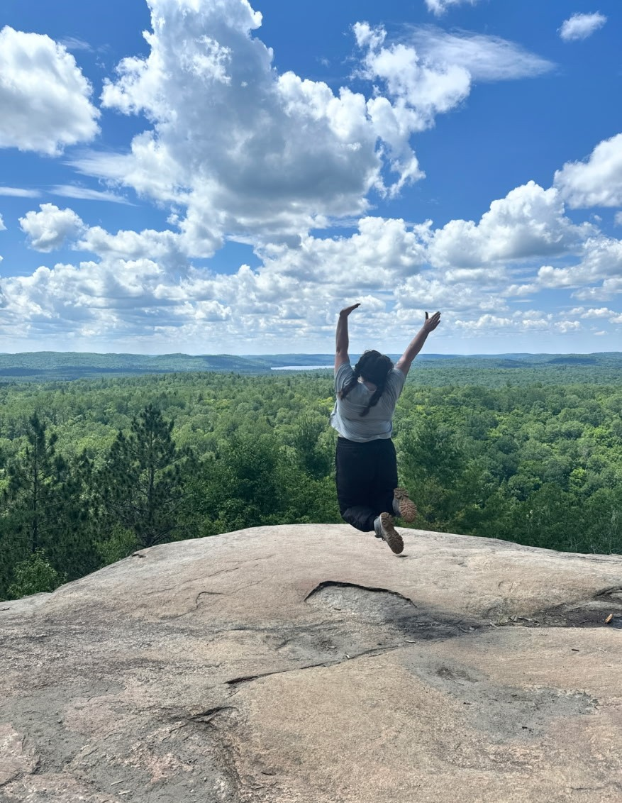
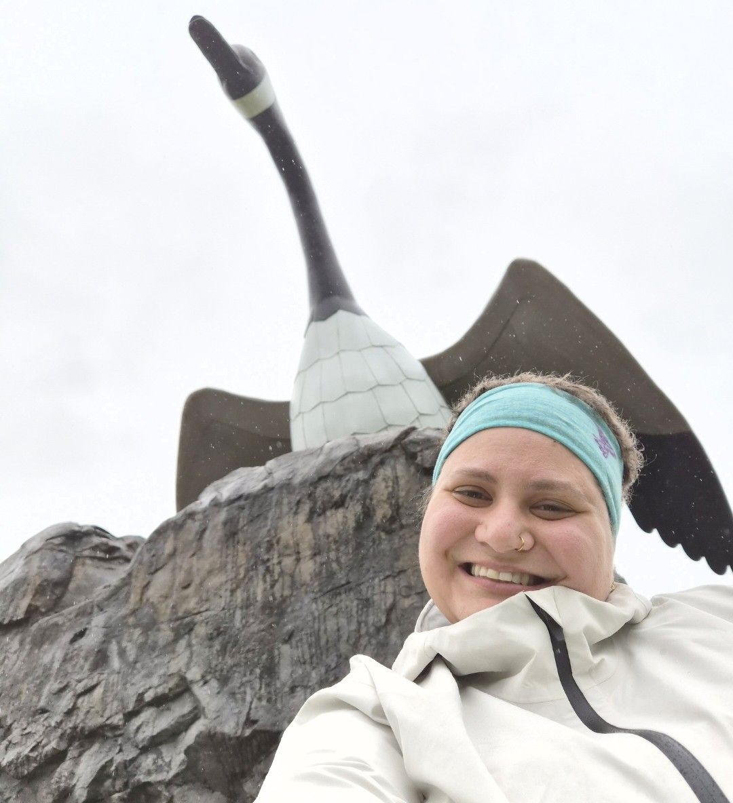
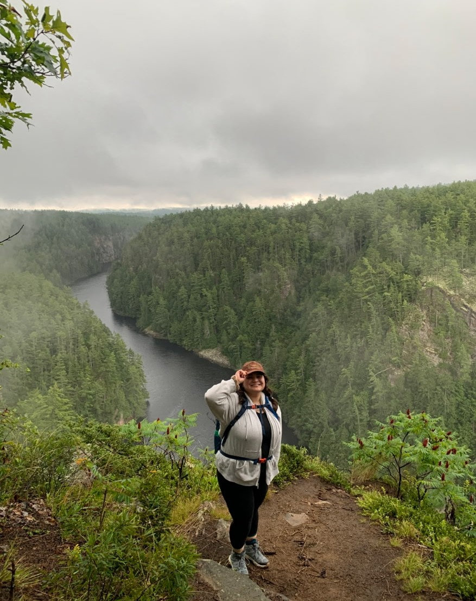
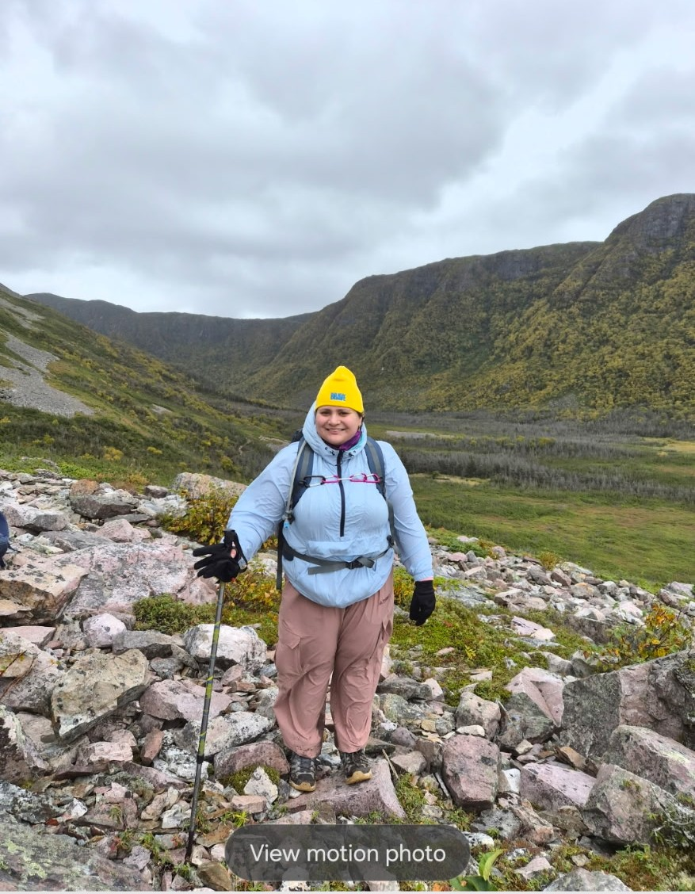
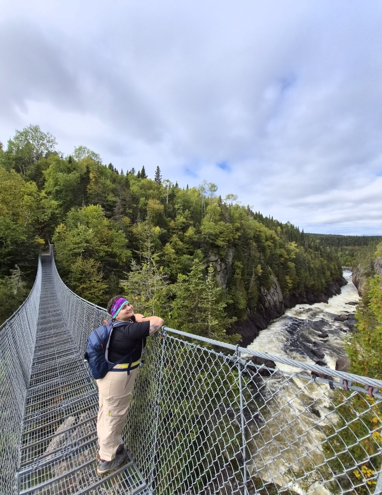
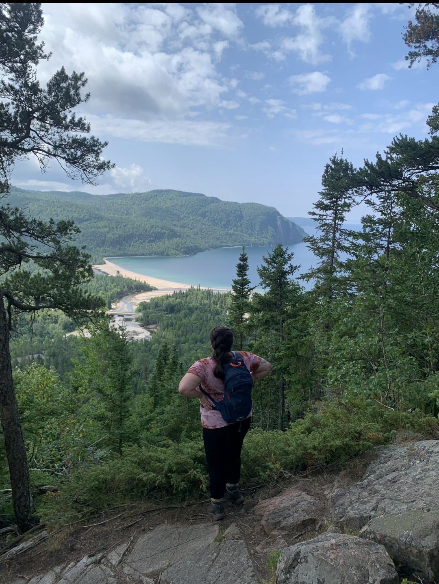
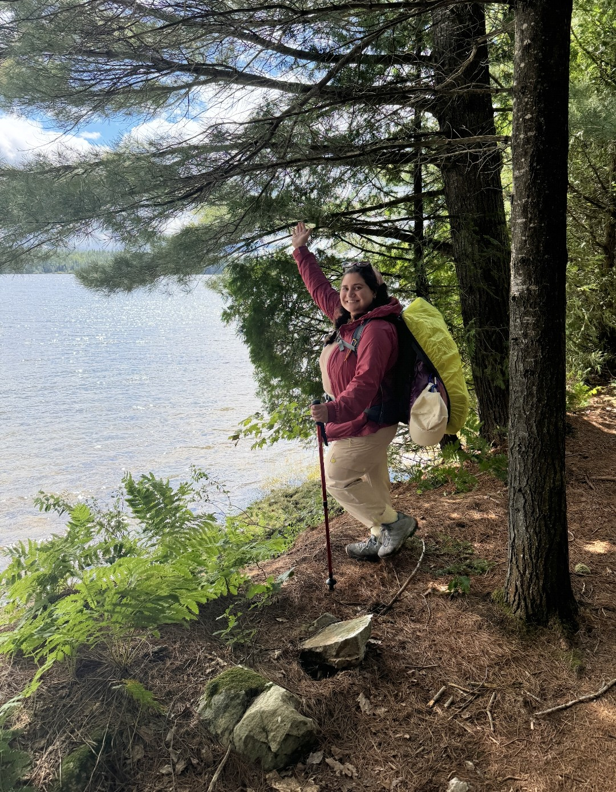
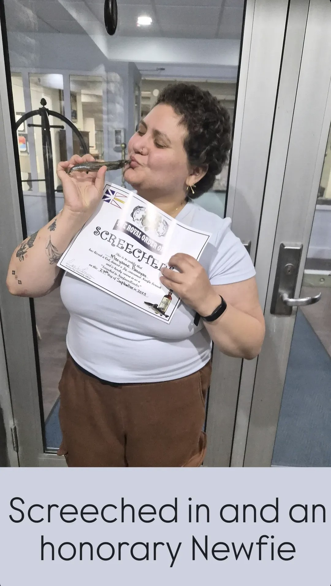
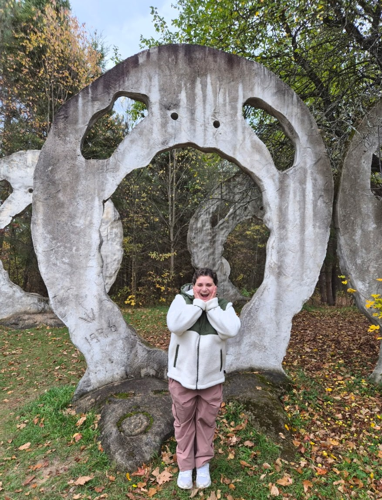
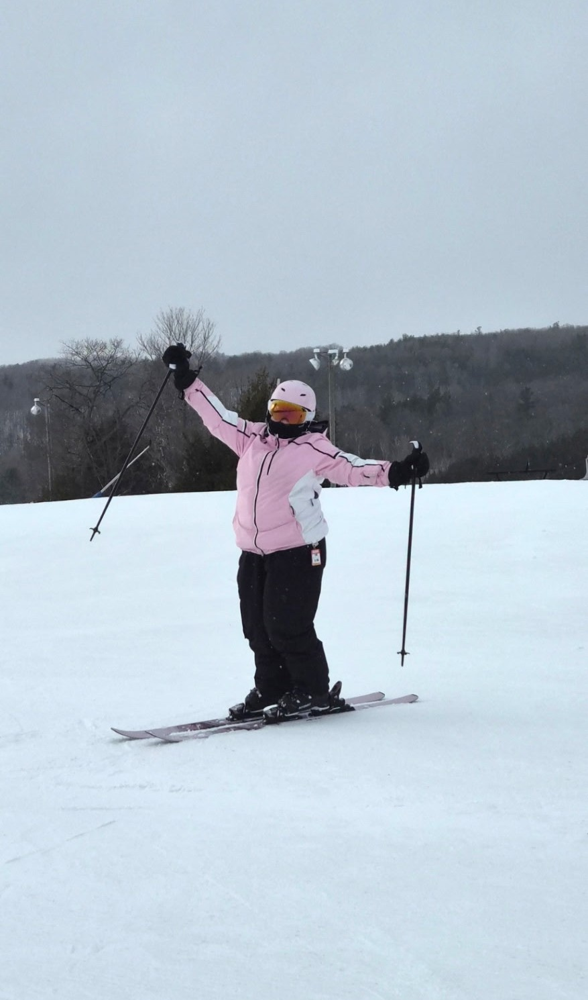

Current book
Currently reading: The Old Man and the Sea - Ernest Hemingway
Current Favourite: Alchemised - SenLinYu
Outside academia
Research is a big part of my life, but it is not the whole story. This is a space for the things I make, watch, read, explore, and experience outside of academia.
Creative work
I enjoy expressing myself through art across different mediums, including watercolour, acrylic, oil, texture, and mixed media.


Scroll horizontally to explore the collection.
Currently
A few of the things currently keeping me entertained and inspired.
Currently reading: The Old Man and the Sea - Ernest Hemingway
Current Favourite: Alchemised - SenLinYu
Currently watching: The Traitors Canada
Current Favourite: The Good Place
Recently watched: Spider-Man: Brand New Day
Favourite: The Holiday
Adventures
I love spending time outdoors and exploring new places, whether that means hiking a new trail, camping, skiing in the mountains, or travelling somewhere completely new.










Scroll horizontally to explore.